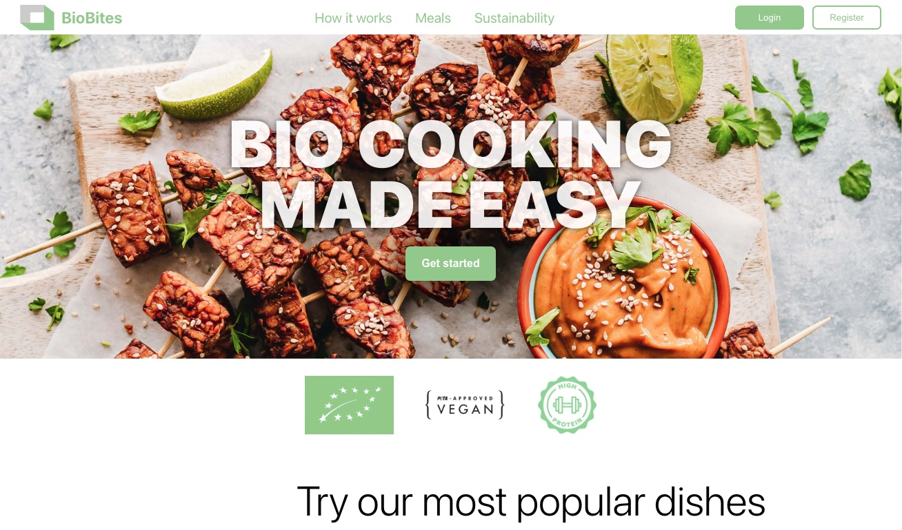
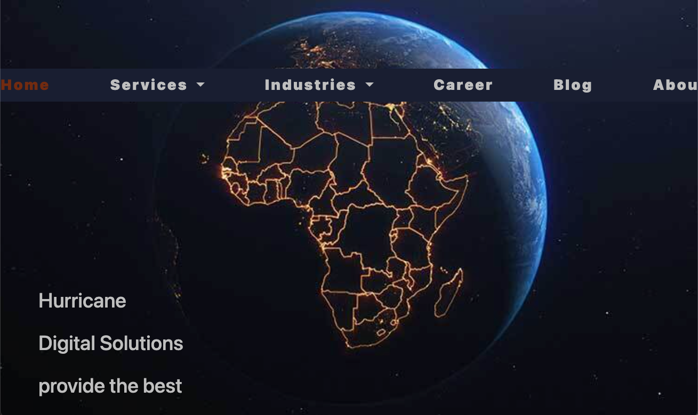

#
Laura Hesse
 
Biobites - DCI final group project
DCI Hackathon
Leipzig Wardrobe - HTML community website
(websiteSelectedEvent)="updateSelectedWebsite($event)">
{{selectedWebsite?.name}}
{{selectedWebsite?.url}}
{{selectedWebsite?.description}}